对着提案 V16 讲。打开：../xiangfa/ · 全程约 10 分钟
位置：刚打开网页，“点击进入”那一屏
各位老师好，我是祖仁泽。这份是我为“张影博士的实验室”这个号准备的接手建议。
开头有一段 6 秒的片头，建议打开声音。
动作：点“点击进入”。片头放的时候不说话，等西装照首屏出来再开口。
位置：西装照首屏，标题“把深的科学讲明白。”
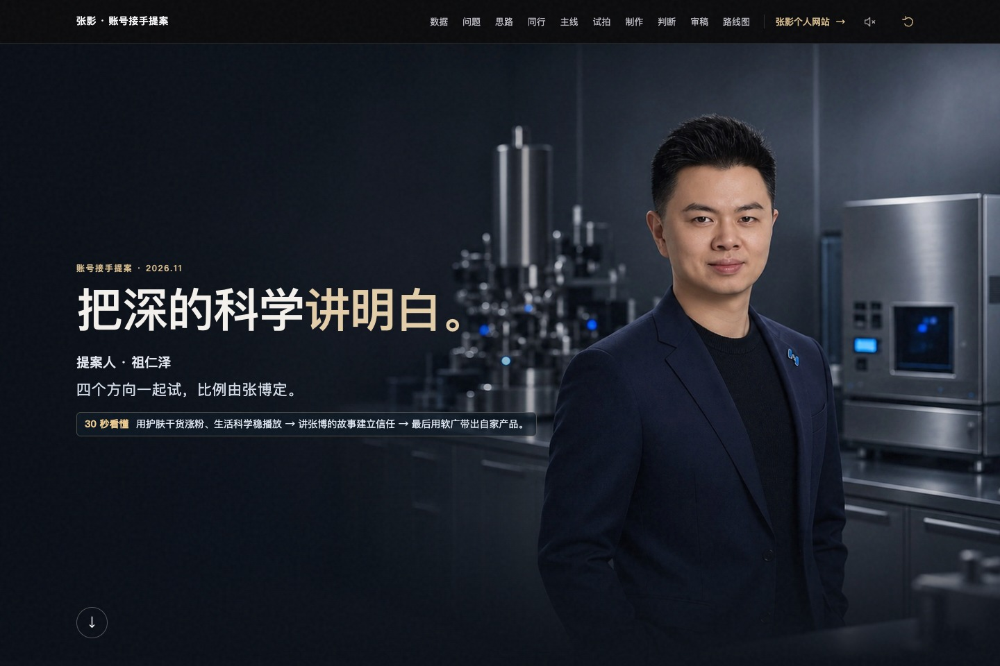
如果只有 30 秒，我的建议就一句话：先用护肤干货和生活科学涨自己的粉，再讲张博的故事建立信任，最后用软广带出自家产品。
整个方案是这样推出来的：先看数据，找出问题，再看同行怎么做，最后定我们怎么做、怎么判断做对了。
动作：往下翻到“先看数据”。
位置：四个大数字、粉丝画像、题材表现条形图、每周走势
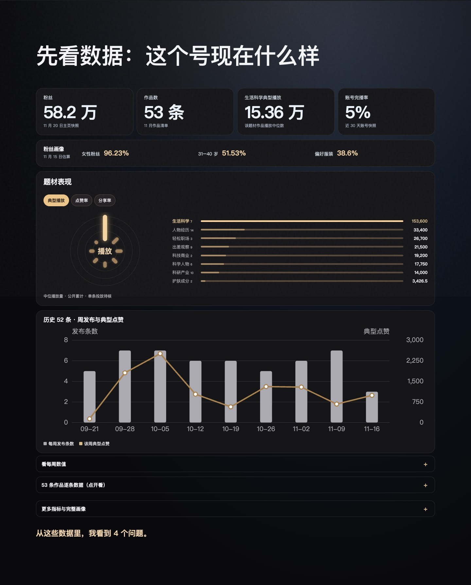
我先把这个号的数据过了一遍。
现在 58.2 万粉丝、53 条作品。粉丝里 96% 是女性，三十一到四十岁的占一半，偏好的商品第一是服装，因为这原来是个女装号。
再看题材：生活科学类的典型播放是 15 万多，比第二名人物经历高了 4 倍多；护肤成分只发过 2 条，是最低的。
完播率近 30 天大约 5%。从这些数据里，我看到 4 个问题。
动作：讲到题材时，鼠标指一下最长的那根“生活科学”条和最短的“护肤成分”条。不用点开下面的折叠，被问到时再点。
位置：浅色背景，四张卡片
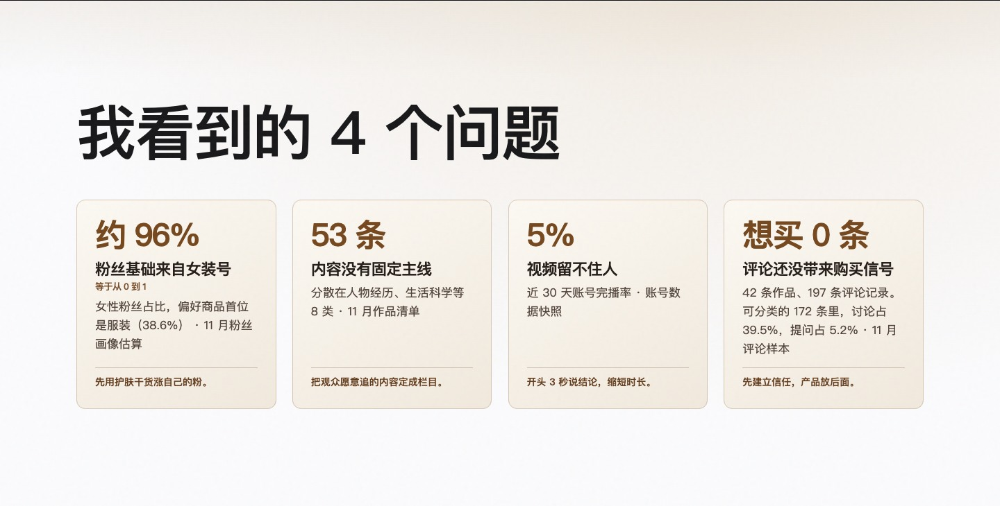
第一，粉丝不是张博的。原来是女装号，所以对张博来说，等于从 0 到 1。但 96% 是女性，护肤内容接得住。
第二，内容没有主线。53 条分散在 8 类题材里，观众记不住这个号讲什么。
第三，留不住人。完播率 5%，开头没抓住人。
第四，评论区还没有购买信号。我读了 42 条作品下的 197 条评论，问在哪买的一条都没有。所以现在硬卖货卖不动，得先建立信任。
动作：讲到哪个问题，鼠标指到哪张卡。语速放慢，这一节最能体现你做过功课。
位置：标题“先涨自己的粉，再讲产品”
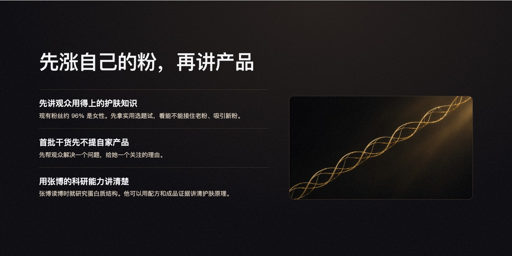
所以思路是：先涨自己的粉，再讲产品。日常视频的任务是积累信任，先讲大家用得上的知识。
张博是做蛋白质结构研究的博士，他能讲出别人讲不出的那一层，这是这个号最大的不同。
位置：六张账号卡，每张下面有一条具体视频
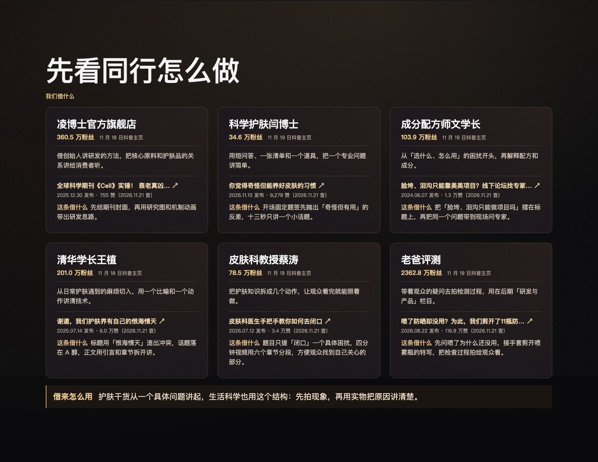
从 0 到 1，最快的办法是站在同行的肩膀上。我研究了 30 个相关账号，挑了 6 个，每个都找了一条具体可以借鉴的视频。
比如闫博士这条“你觉得奇怪但能养好皮肤的习惯”，开场先抛一个反差，十几秒只讲一个小话题；蔡涛教授讲“闭口”这条，只抓一个具体困扰，分成几段，观众能直接找到自己关心的部分；老爸评测这条防晒喷雾，先问“为什么喷了没用”，再把检测过程拍给观众看，这是我们后期讲研发的拍法。
总结下来，同行跑通的路是：从一个具体问题讲起，用专业身份把原因讲清楚，产品放最后。
动作：讲到哪条，指哪张卡下面的视频标题。如果面试官想看，可以点标题旁的 ↗ 打开原视频。只说借什么，不评价别人好坏。
位置：四张卡：护肤干货 / 生活科学 / 张博的故事 / 研发与产品
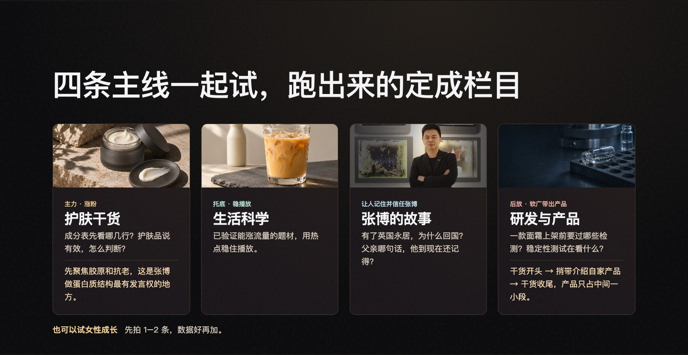
内容上分四条主线一起试，哪条跑出来，就定成固定栏目。
护肤干货是主力，负责涨精准的粉。先聚焦胶原和抗老，因为这是张博做蛋白质结构最有发言权的地方，泛泛讲护肤，他就是第一百个护肤博主。
生活科学负责稳住播放。数据里它是这个号表现最好的题材，用已经跑通的题材打底。
张博的故事让大家记住他、信任他。研发与产品放后面，讲产品也用“干货—产品—干货”的夹心结构，产品只占中间一小段。
位置：标题“首月试拍 8 条”，三个比例按钮，下面 8 张卡
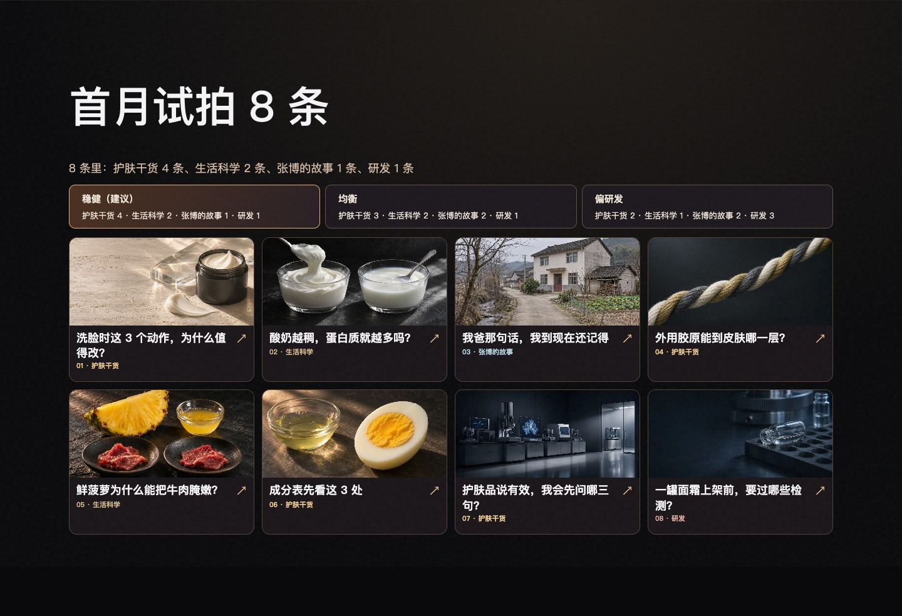
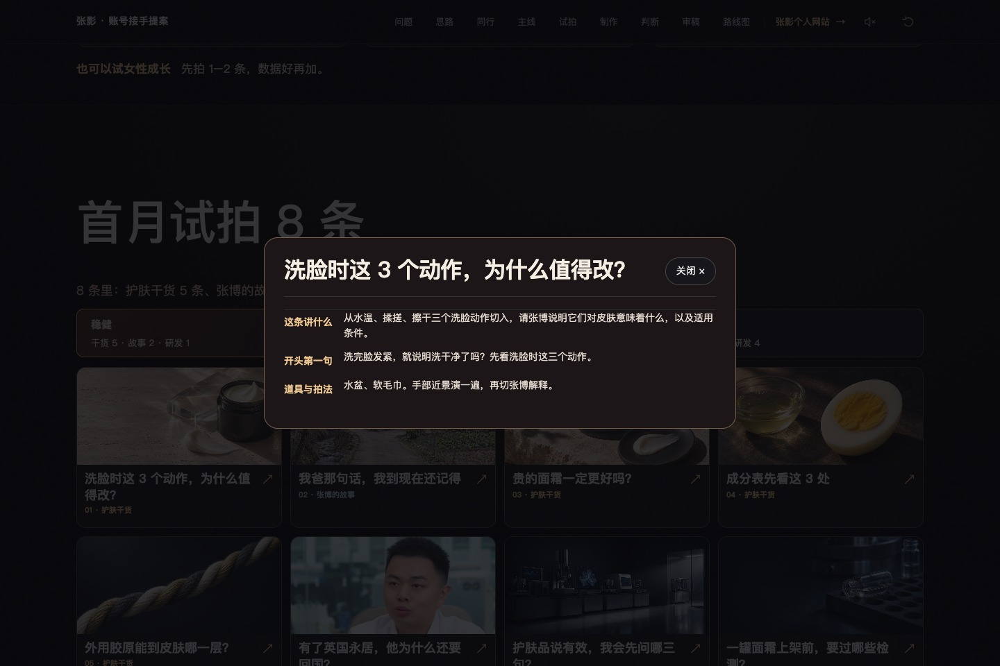
第一个月我建议拍 8 条：护肤干货 4 条、生活科学 2 条、张博的故事 1 条、研发 1 条。上面三个按钮是三种比例，最后由张博定。
每一条都想好了讲什么、开头第一句、用什么道具。比如“洗脸时这 3 个动作”，开头一句是“洗完脸发紧，就说明洗干净了吗？”道具就是一盆水、一条毛巾，成本低，一次能拍好几条。生活科学像“酸奶越稠，蛋白质就越多吗”，都是从生活里的现象切进去。
动作：点开第一张卡给他看一眼（第二张截图），再点“关闭”。
位置：一条横线上 01–06 六步
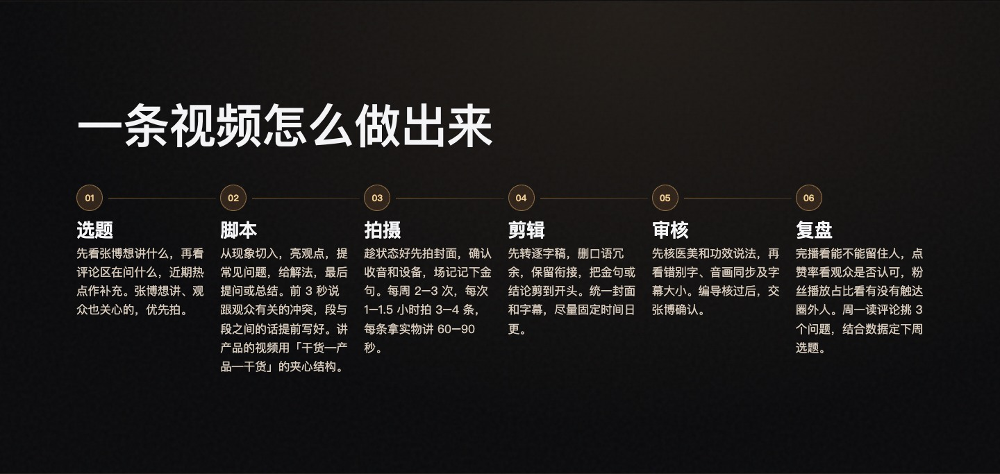
具体到每一条，我按这 6 步做。
选题：张博想讲什么、评论区在问什么、近期热点。张博想讲、观众也关心的，优先拍。
脚本：现象切入、亮观点、提常见问题、给解法，最后提问。头 3 秒说和观众有关的冲突，衔接的话提前写好。
拍摄：先拍封面，场记记金句。每周 2 到 3 次，一次拍 3 到 4 条。剪辑：先转逐字稿，把金句剪到开头，这是针对完播率 5%。
审核先查功效说法；复盘看完播、点赞率，每周一挑 3 个观众问题定下周选题。
位置：三个大字“超过 2 倍 / 连续 2 条 / 连续 4 条”
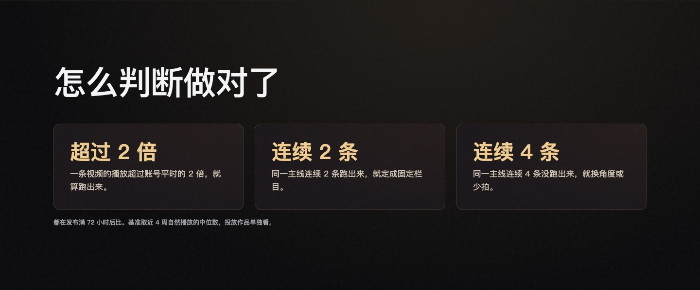
播放超过账号平时的 2 倍就算跑出来；同一主线连续 2 条跑出来就定成栏目；连续 4 条没跑出来就换角度。门槛是建议值，看了后台再调。
位置：标题“合规审稿过了，再给张博看”
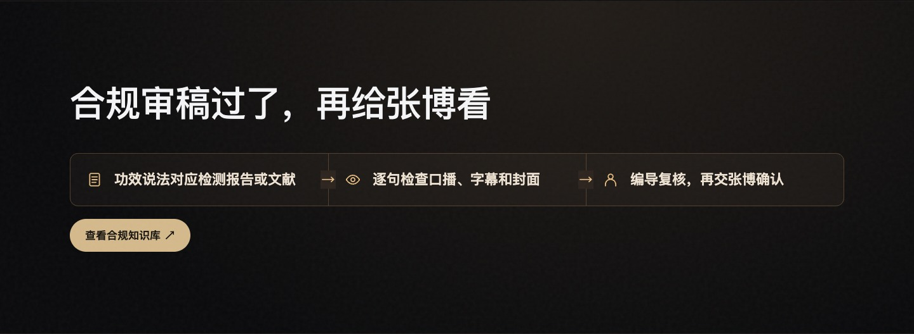
护肤内容最大的风险是功效说过头。每条文案先过合规审稿，再给张博看。我整理了一份合规知识库，用 AI 逐句先查一遍，我再人工复核。
位置：一条从左到右的线，下面一条“B 端号”
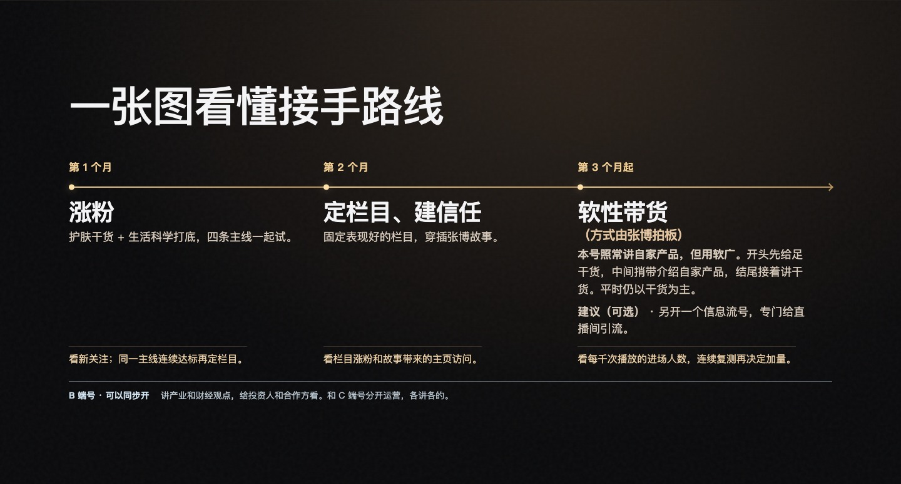
最后一张图。第 1 个月涨粉：护肤干货加生活科学，四条主线一起试。第 2 个月定栏目、建信任：固定表现好的栏目，穿插张博的故事。
第 3 个月起软性带货，方式由张博拍板。本号照常讲自家产品，但用软广：开头干货，中间带一下产品，结尾接着干货。另开一个信息流号专门给直播间引流，是我的一个可选建议。
下面这条线是 B 端号，可以同步开，讲产业和财经观点，给投资人和合作方看，和 C 端分开运营。
位置：停在路线图这一屏
总结一下：先用护肤干货和生活科学涨自己的粉，再用张博的故事建立信任，最后用软广带出自家产品。每一步都有数据标准判断能不能往下走。
这些都是我的建议。进来第一周，我会先和张博对齐他想讲什么，再定比例。先把基础工作做好，再用数据说话、慢慢调整。谢谢各位老师，请指点。
被问到数字从哪来：往上翻回“先看数据”，或点开“53 条作品逐条数据”。
数据里“护肤成分”只有 2 条，样本太少，而且那两条偏讲原理、门槛高。这次一是从洗脸、擦面霜这些日常动作切进去；二是先聚焦胶原和抗老，这是张博最有发言权的地方；三是我同时放了生活科学稳住播放。用“连续 4 条跑不出来就换角度”来验证，不会一条路走到黑。
这个号播放最好的就是生活科学，典型播放 15 万多，新加坡奶茶那条快 59 万。用已经跑通的题材稳住流量，护肤干货负责吸精准的粉，两条腿走路比全押一边稳。
IP 有表达欲是第一位的，不然拍出来会很僵。所以进来第一周，我先和张博对齐他想讲什么，再定比例。他想讲科研和创业，就多放“张博的故事”和“研发”；四条主线本来就是给他留了选择。
对不上，这一点我也看到了。所以我没有指望老粉直接买，新涨的粉要往高消费、关心抗老的人群去找，内容聚焦胶原和抗老就是为了这个；带货也放到第 3 个月以后，信任够了再说。
会，所以要控制频率和结构。产品视频用“干货—产品—干货”的夹心，大概四五条干货才出一条软广；另开信息流号专门引流，是可选的建议，由张博拍板。
从 0 到 1 看同行是为了少走弯路。我只借表达方法，比如开头怎么问、道具怎么用，不照搬人设，也不照搬功效说法。张博的科研背景是别人没有的。
对大纲时只跟他讲核心干货点，并说明这个选题是评论区观众问的，让他知道为什么拍。现场先肯定他，缺的内容用“再补一条备份”补录；衔接的话提前写好，减少临场发挥。
我把 53 条作品都打开看了，42 条能看到评论，一共记录 197 条，按提问、质疑、想买、观点讨论分了类。只记原话，不记用户名。
集中拍：每周 2 到 3 次，每次一个到一个半小时，一次拍 3 到 4 条。选题、脚本、道具提前准备好，张博到现场只管讲。
选、写、拍、剪全流程：从数据和评论里选题，写脚本，过合规审稿，现场拍摄，剪辑包装，发布后复盘，再定下一周的选题。